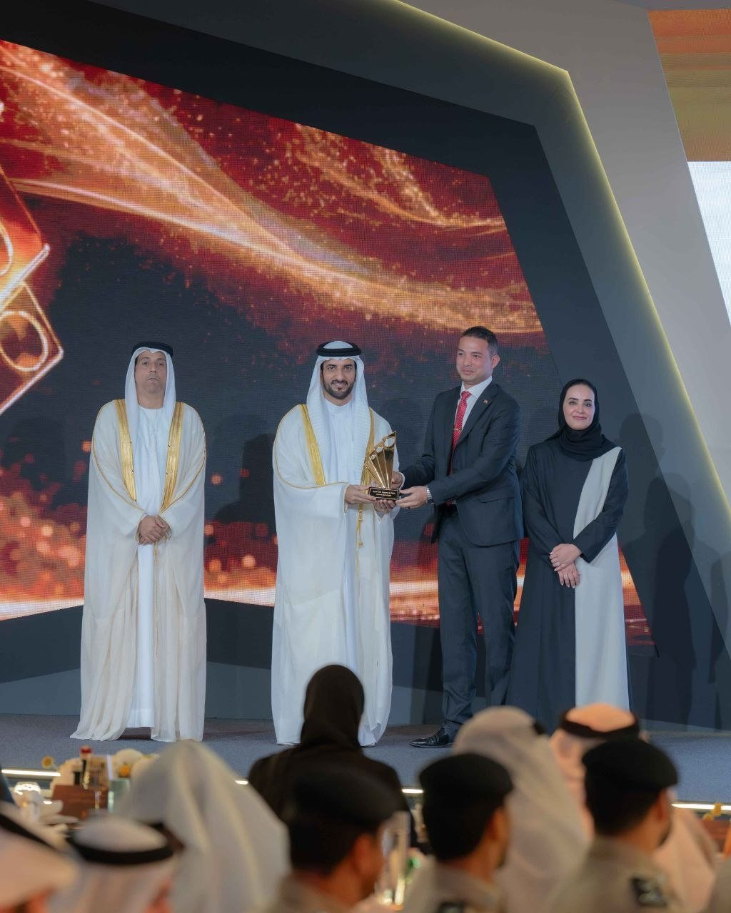

مشهرة برقم 12593 لسنة 2025 بوزارة التضامن الاجتماعي، وتعمل في أنحاء مصر. أول كيان مؤسسي تنموي في مصر يؤسسه ويديره شباب من دور الأيتام، عاشوا التجربة وحوّلوها إلى مصدر إلهام لغيرهم (تجربة، وعلم، وخبرة ميدانية تصل إلى ٢٥ عامًا، تجتمع في كيان واحد).
جيل من فاقدي الرعاية الوالدية قادر على صناعة مستقبله بكفاءة تامة دون حواجز، انطلاقاً من مبدأ تكافؤ الفرص، ليصنع أثراً مستداماً ويتجاوز التحديات المجتمعية ويصبح شريكاً فاعلاً في بناء الوطن.
نحوّل فاقدي الرعاية الوالدية من متلقين للرعاية إلى صناع قرار وقادة مجتمعيين، بتوظيف الرياضة والفنون والإعلام لإثبات الكفاءة، وكسر الوصمة المجتمعية بتصحيح الوعي، وتأسيس شبكة أمان متكاملة تضمن استقلالهم وتوصل صوتهم بكل قوة.
لا نؤمن بلغة الاستعطاف، بل ننتزع حقوقنا ونثبت كفاءتنا بالعمل والندية في كل الميادين، رياضياً ومجتمعياً.
نرفض إخفاء الحقيقة أو التنصل من البدايات، ونعتبر هويتنا كأبناء دور رعاية وسام عز ومصدر قوة.
قيمة أي مبادرة تقاس بما تتركه من تغيير مستدام في حياة الشباب، لا بعدد الفعاليات ولا بلقطات التصوير.
التغيير الحقيقي يبدأ من داخلنا. المؤسسون وأعضاء الفريق أصحاب القضية والأقدر على صنع الحلول من رحم التجربة.
نحن عائلة كبيرة لا تترك أحداً خلفها. نجاح فرد منا نجاح للجميع، وندعم بعضنا لنتجاوز معاً تحديات ما بعد سن الثامنة عشرة.
اكتشاف المواهب والقدرات والاهتمامات.
إتاحة تجربة رياضية حقيقية.
تنمية المهارات الرياضية والشخصية.
ربط المشاركين بالمجتمع والشركاء والفرص.
فتح مسارات للتدريب أو العمل أو التطوير.
قياس ما تغير في حياة المستفيد.
اكتشاف المواهب وبناء مسارات احترافية وتطوير القدرات عبر بطولة جسور، ومنتخب جسور، ودعم الألعاب الفردية.
مسار متخصص لخريجات دور الرعاية ودعم حضورهن في الرياضة والمحافل المعنية بالحماية.
توظيف وتأهيل مهني، قروض حسنة للمشروعات الصغيرة، وتجهيزات معيشية تدعم الاستقلال، والخدمات الأساسية المعيشية.
دعم نفسي وقانوني واجتماعي، حل أزمات الأوراق، قوافل طبية، ودعم أسري.
مرصد بصمة نور، حضور فني ودرامي إيجابي، وحملات توعية في المدارس والجامعات والإعلام.
تحويل الشباب إلى سفراء وممثلين بالمحافظات لنقل نبض الشارع والتأهل للقيادة، لتمثيل قضيتهم في المحافل والمؤتمرات وتوصيل صوت الشباب.
برنامج تأهيل شامل لشباب وفتيات دور الرعاية من سن 14 إلى 18 سنة، يهيئهم لمرحلة الاستقلال والدمج المجتمعي قبل خروجهم من الدار. من عبر الطريق بنفسه هو أصدق من يدل عليه، فخريجو دور الرعاية الناجحون يقودون البرنامج تحت إشراف مختصي بصمة نور.
دوائر حكي يديرها خريجون ينقلون تجاربهم الحقيقية، مع الوعي المالي وتأمين السكن وبناء علاقات اجتماعية سوية.
ورش لتحديد المسار التعليمي أو الحرفي، وتدريب عملي على كتابة السيرة الذاتية واجتياز المقابلات الشخصية بثقة.
أخصائيون نفسيون يرصدون المشكلات السلوكية كالخوف من المستقبل والرهاب الاجتماعي، وجلسات توعية جماعية وتدخل فردي متخصص.
أنشطة رياضية تكسر الحواجز النفسية، واكتشاف المواهب ودمجها في فرق الجمعية لفتح مسار احترافي.
على مدار 29 يوماً في رمضان، لخريجي دور الأيتام وأسرهم في 5 مناطق: المعادي، بدر، مايو، السلام، العبور
وُزعت على 400 مستفيد
في قافلة طبية متكاملة
وفرها العمل والتشبيك مع الشركاء
من 25 شاركوا في دورات المهارات الشخصية وICDL بالتعاون مع الجامعة الفرنسية في مصر
شاركوا في قمة التوظيف «ستارت»
في المعسكر القومي برأس البر، بدعوة رسمية من وزارة الشباب والرياضة
في كأس جامعة الدول العربية
في منصات تلفزيونية ورقمية ومطبوعة كبرى
شارك أربعة من أعضاء المبادرة في حلقة وثائقية بمسلسل «أولاد الشمس» في دراما رمضان 2025
دعوة رسمية للقاء داخل المجلس وتمثيل الشباب الأيتام، ولقاءات مع قيادات وزارتي التضامن الاجتماعي والشباب والرياضة
حملات وندوات توعية في 7 جامعات و3 مدارس
تنظيم النسخة الثالثة في رمضان 2027.
تشكيل منتخب للرعاية اللاحقة فوق 18 سنة للمشاركة في دوري الدرجة الرابعة.
يوم تطوعي وطني يجمع شباب دور الرعاية وطلاب الجامعات: تشجير ونظافة وزيارات لدور الأيتام.
حملات مشتركة مع الجامعات المصرية وموظفي الشركات للتعريف بقضية فاقدي الرعاية.
جلسات ومؤتمرات لحل مشكلات الأوراق الثبوتية للشباب مع وزارتي الداخلية والتضامن.
تأهيل 60 شاباً وفتاة تحت 17 سنة قبل خروجهم من الدار.
أكبر حملة لاكتشاف المواهب الرياضية في دور الأيتام وتشكيل منتخب مصر للأيتام تحت 17 سنة.
ملتقى لشباب الأيتام من محافظات مصر، مع سفير يمثل الأيتام في كل محافظة.
ورش عن ريادة الأعمال والمشروعات متناهية الصغر، مع فرص لتنفيذ نماذج منها.



فاز نور شعبان بالجائزة عن فئة أفضل مبادرة شبابية في الاتصال، بإشراف المكتب الإعلامي لحكومة الشارقة، وكرّمته الدكتورة مايا مرسي، وزيرة التضامن الاجتماعي.